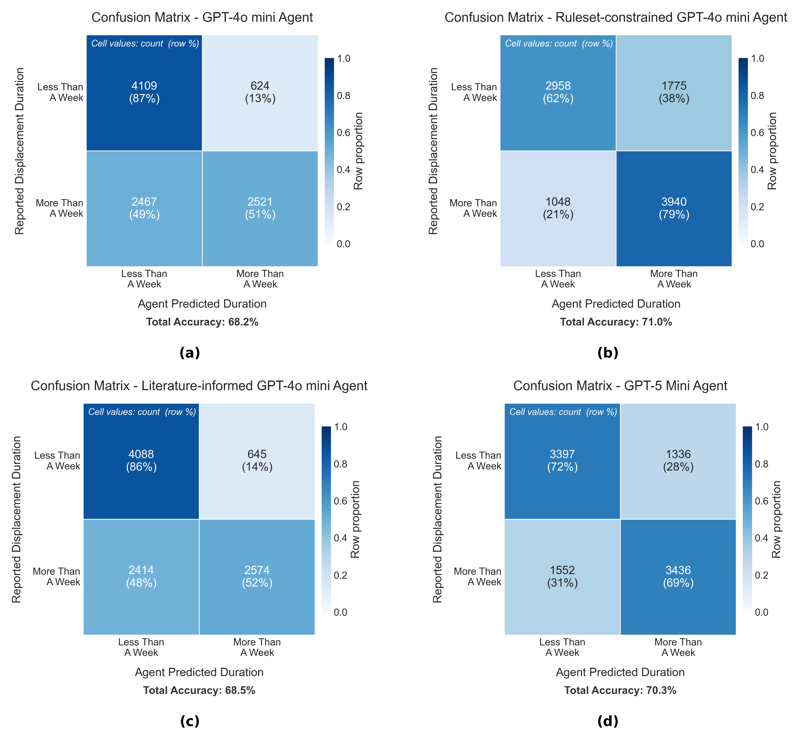
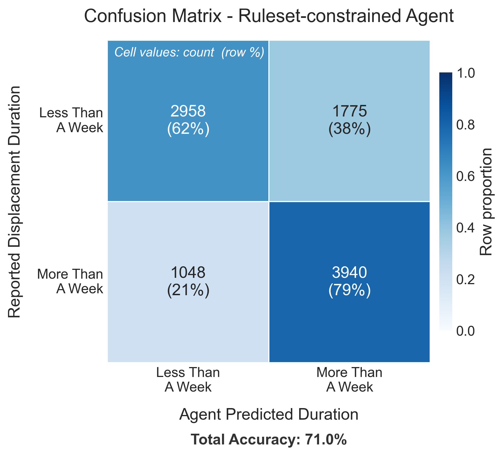

Example 6¶
Example 6 shows how a household generative agent implemented in pyrecodes is validated using the US Census Household Pulse Survey. The generative agent makes decisions using an LLM conditioned on its socio-economic parameters, building damage, and access to infrastructure services. This example shows how to construct the generative agent, provide inputs, and compare its outputs with the decision-making of real households in the US.

Confusion matrices comparing generative agent decisions to reported household displacement durations for all prompting strategies.¶
Running the example¶
Example 6 Jupyter notebook illustrates how to construct a household generative agent, prompt it with data from the Household Pulse Survey, and evaluate its displacement decisions against actual reported outcomes using confusion matrices.
Note
Example 6 is a standalone notebook — it does not use main.run(). Install pyrecodes with the household extra before running it:
pip install "pyrecodes[household]"
An OpenAI API key is also required, provided in an openai_api_key.json file in the root of the repository in the format {"API_KEY": "your-key-here"}.
Hint
By default, the notebook processes 10 randomly sampled households. The prompting strategy can be changed by setting PROMPTING_STRATEGY to None (baseline GPT), 'ReadLiterature', or 'ReadRuleset'.
The example can be run locally by downloading the Example 6 Jupyter notebook and the required files from the Example 6 folder.
Input data¶
The input data for Example 6 is the US Census Household Pulse Survey, filtered to households that reported disaster-related displacement. The survey data is read from household_pulse_survey_displaced.csv in the Example 6 folder.
Each household is characterized by:
Socio-economic parameters: state, MSA, tenure, income, number of occupants, children by age group, and employment status.
Building damage: damage level reported by the household.
Disaster type: the type of disaster experienced.
Infrastructure access: access to water, power, food, and sanitary conditions.
Displacement duration: whether the household was displaced for less than or more than a week (the ground truth label used for validation).
Households with any missing parameter or that experienced more than one disaster type are excluded from the analysis.
Generative agent¶
The generative agent is implemented in the HouseholdSurveyGPT class. The agent is prompted in three stages:
Disaster context — the agent is informed about the type and severity of the disaster.
Socio-economic profile — the agent is provided with the household’s socio-economic parameters.
Situation narrative — the agent is given a description of the household’s building damage and access to infrastructure services.
The agent then decides whether the household leaves home for less than a week or more than a week.
Prompting strategies¶
Three prompting strategies are available and can be set via the PROMPTING_STRATEGY parameter:
None— baseline GPT with no additional guidance.'ReadLiterature'— the agent is informed by relevant academic literature on household displacement.'ReadRuleset'— the agent is constrained by a decision ruleset derived from the literature.

Confusion matrix for the ruleset-constrained generative agent ('ReadRuleset' strategy).¶
The notebook prints the full prompt–answer exchange for each household. The excerpt below shows a single agent run — from disaster context through the final displacement decision:
════════════════════════════════════════════════════════════════════════════════
HOUSEHOLD 1 / 1
════════════════════════════════════════════════════════════════════════════════
┌─ PROMPT — DISASTER CONTEXT ──────────────────────────────────────────────────
│ # Context
│ You are a household in a home that experienced a Hurricane.
│ - In the following your household socioeconomic characteristics will be
│ provided first, followed by a description of your current situation.
│ - Based on your socioeconomic characteristics and your current situation
│ you need to inform us about your estimate on how long you will be
│ displaced from home.
│ Important:
│ - This message is context only. Do not produce output yet.
└───────────────────────────────────────────────────────────────────────────────
┌─ ANSWER — DISASTER CONTEXT ──────────────────────────────────────────────────
│ Understood. I will wait for the socioeconomic characteristics and
│ current situation details before providing my estimate.
└───────────────────────────────────────────────────────────────────────────────
┌─ PROMPT — SOCIOECONOMIC PROFILE ─────────────────────────────────────────────
│ Socioeconomic characteristics of your household:
│ - You are in Florida Miami-Fort Lauderdale-Pompano Beach, FL.
│ - You are Owner of the building you live in.
│ - Your household income level is $100,000 - $149,999.
│ - There are 2 people in your household. Out of those 0 are children
│ below 5 years of age, 0 are children between 5 and 11 years of age,
│ and 0 are children between 12 and 17 years of age.
│ - Your household members are employed.
│ Important:
│ - This message is context only. Do not produce output yet.
└───────────────────────────────────────────────────────────────────────────────
┌─ ANSWER — SOCIOECONOMIC PROFILE ─────────────────────────────────────────────
│ Understood. I will wait for the description of my current situation
│ before providing my displacement estimate.
└───────────────────────────────────────────────────────────────────────────────
┌─ PROMPT — SITUATION NARRATIVE ────────────────────────────────────────────────
│ Your current situation:
│ - Due to the Hurricane, your property and your possessions experienced
│ some damage.
│ - In the first month after the Hurricane, you experience always having
│ access to water.
│ - In the first month after the Hurricane, you experience always having
│ electricity.
│ - In the first month after the Hurricane, you experience always having
│ enough food to eat.
│ - In the first month after the Hurricane, you experience never living
│ in unsanitary conditions.
│
│ Task:
│ Based on the current situation described above, which one of the
│ following do you believe will be your most likely displacement duration:
│ LeaveHomeForLessThanAWeek, LeaveHomeForMoreThanAWeek.
└───────────────────────────────────────────────────────────────────────────────
┌─ ANSWER — AGENT DECISION ─────────────────────────────────────────────────────
│ 1. Relevant facts: My property experienced some damage from the
│ Hurricane. I am an owner in Miami. I always had access to water,
│ electricity, food, and never lived in unsanitary conditions.
│
│ 2. Since the damage to my property is only "some damage" and all
│ essential services remained available, the disruption to daily life is
│ relatively minor. As a homeowner with stable income and no dependents,
│ I can manage temporary displacement quickly.
│
│ LeaveHomeForLessThanAWeek
└───────────────────────────────────────────────────────────────────────────────
Agent decision: LeaveHomeForLessThanAWeek
Actual displacement duration: Less than a week ✓
Results¶
Agent decisions are compared against reported displacement durations using a confusion matrix. The displacement duration reported in the survey is mapped to the agent’s binary decision space: LeaveHomeForLessThanAWeek or LeaveHomeForMoreThanAWeek. Total accuracy is reported below each confusion matrix.